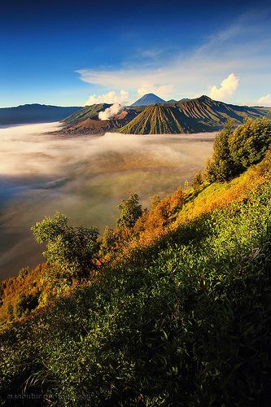

Selamat datang di website Jelajah Wisata Indonesia. Website ini berisi informasi mengenai beberapa tempat wisata menarik yang ada di Indonesia. Indonesia memiliki banyak sekali destinasi wisata, mulai dari pegunungan, pantai, laut, hingga wisata budaya.
🧭Destinasi Wilayah
Berikut adalah objek wisata menarik di Jawa Timur

Gunung Bromo
Gunung Bromo merupakan salah satu tempat wisata terkenal yang berada di Jawa Timur.
Kawah Ijen
Kawah Ijen merupakan salah satu tempat wisata terkenal yang berada di Jawa Timur.
Air kapas biru
Air terjun kapas biru merupakan salah satu tempat wisata terkenal yang berada di Jawa Timur.
🎵Musik Nusantara
Silakan dengarkan musik berikut sambil menikmati informasi wisata Indonesia
🏞️Wonderland Indonesia
Silakan melihat video berikut sambil menikmati informasi wisata Indonesia